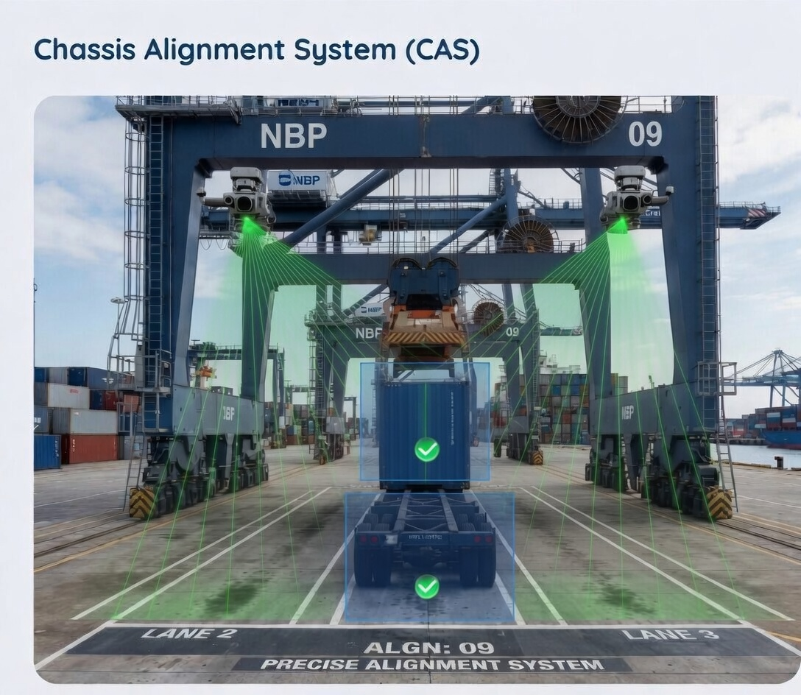

Perception Systems
Chassis Alignment System (CAS)
Combined LiDAR and camera solution for chassis alignment and container handover automation with real-time detection and verification.
C++, OpenCV, PCL, LiDAR, Camera, Sensor Fusion
Project Overview
Designed a multi-sensor perception architecture combining LiDAR and camera systems for precise real-time detection and alignment verification during container handover workflows.
The Challenge
Container handover requires high-precision alignment in dynamic terminal conditions with variable light, weather, and strict response-time requirements for crane integration.
The Solution
Implemented real-time chassis detection and pose estimation with sensor fusion and robust verification logic to provide stable, low-latency feedback for operation control.
Key Achievements
- High-precision alignment verification in real operations.
- Low-latency feedback suitable for crane integration loops.
- Reliable multi-modal performance in field variability.